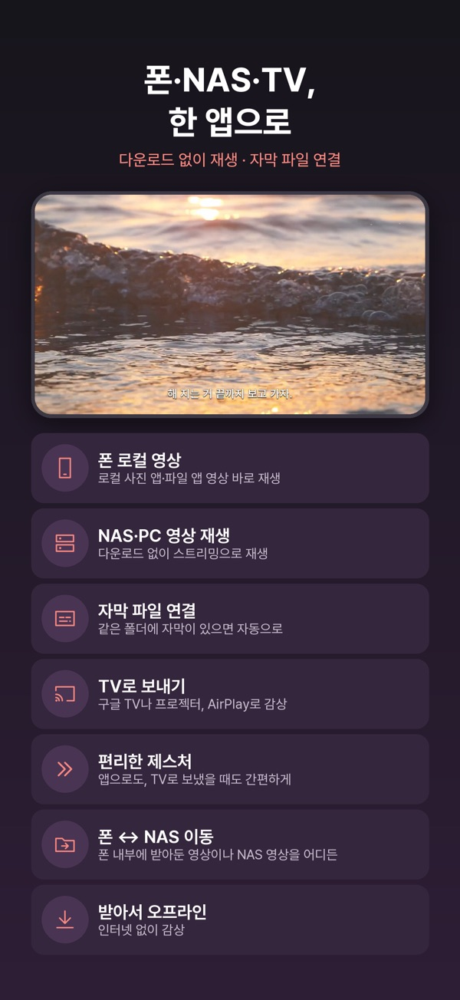
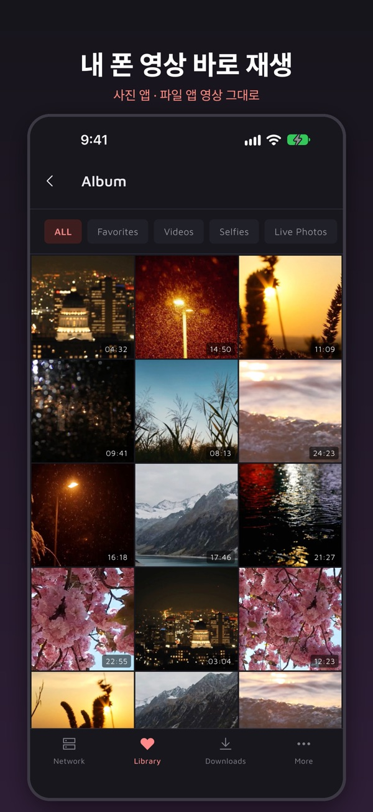
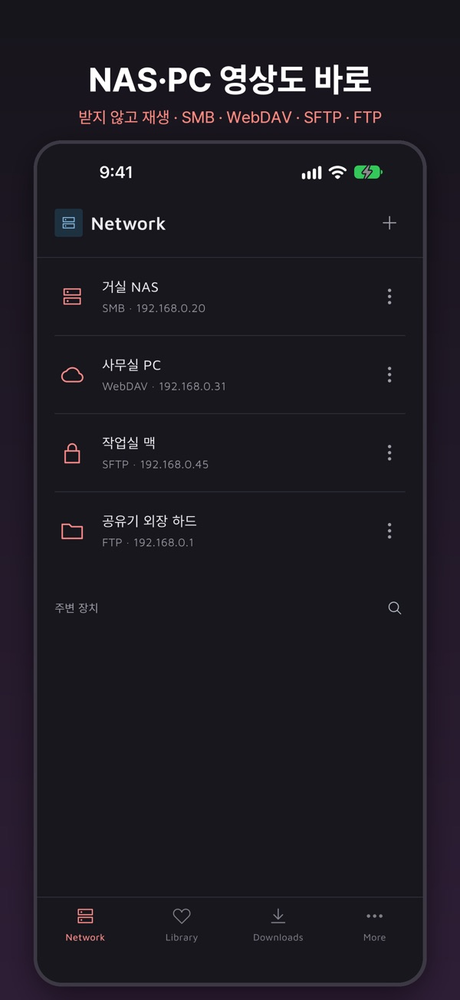
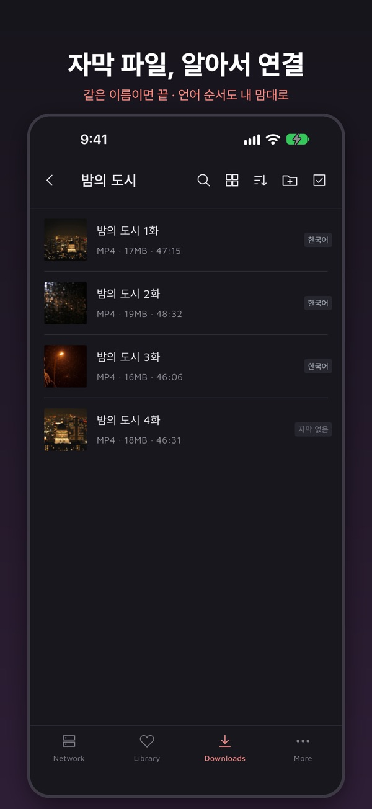
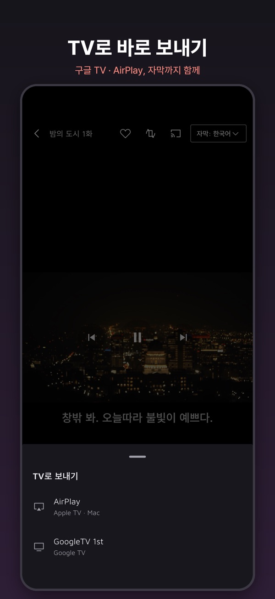
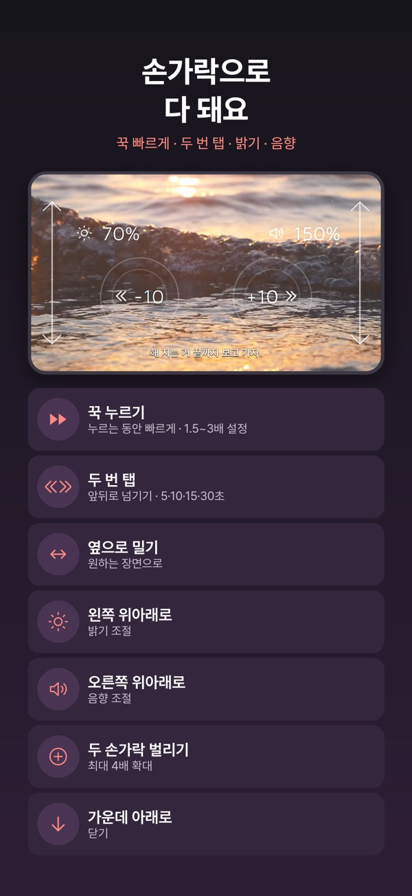

폰·NAS·TV 어디서든 보는 영상 플레이어, Loop Player입니다. 심플하고 쉽게, 재생은 빠르고 부드럽게. 내 폰 영상도, NAS 영상도 열면 바로 보고, 자막 파일은 알아서 찾아 붙이고, TV로는 한 번에 보내요.
내 폰 영상 그대로
- 사진 앱 영상, 파일 앱 폴더의 영상을 바로 재생해요.
- mp4·mkv·avi·mov 등 여러 형식을 그대로 틀어요.
자막 파일은 알아서 찾아 줘요
- 영상과 이름이 같은 자막 파일(srt·smi·ass·vtt 등)을 찾아 붙여요.
- '영화.ko.srt'처럼 언어 표시가 붙은 자막은 원하는 언어 순서대로 골라요(기본 한국어 → 일본어).
- 이름이 조금 달라도 회차 번호가 같으면 찾아 줘요.
- 자막 크기·높이·모양(그림자·반투명 배경·테두리)·색을 내 눈에 맞게.
TV로 바로 보내기
- 구글 TV(Chromecast)·AirPlay로 한 번에 보내요. 켜 둔 자막도 함께 가요.
- 보내는 동안 휴대폰이 리모컨: 두 번 탭 넘기기, 꾹 눌러 빠르게(1.5~3배), 잠금 화면에서도 조절.
NAS·PC 영상을 바로
- SMB(NAS·윈도우 공유 폴더), WebDAV, SFTP, FTP, DLNA를 지원해요.
- 받지 않고 바로 재생해요.
받아 두고, 자유롭게 옮기고
- NAS 영상을 폰에 받아 두면 인터넷 없이 볼 수 있어요.
- 폰 → NAS, NAS → 폰, NAS → 다른 NAS로 복사·옮기기.
- 같은 이름의 자막과 이어 보기 기록도 함께 따라가요.
편하게 보기
- 썸네일 목록·격자, 본 만큼 표시, 이어 보기
- 두 번 탭 넘기기(5·10·15·30초), 꾹 눌러 빠르게(1.5~3배), 왼쪽 밝기·오른쪽 소리
- 옆으로 밀어 원하는 장면으로, 두 손가락으로 최대 4배 확대, 아래로 내려 닫기
- 최대 300% 소리, 작은 소리 고르게
- PiP(화면 속 화면, 자막도 함께), 백그라운드 재생
- 마음에 드는 영상은 Like, 지울 후보는 Dislike로 정리
개인정보
- 가입이 없고 어떤 정보도 모으지 않아요. 서버 비밀번호는 기기 키체인에만 저장돼요.